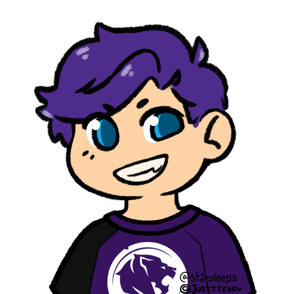
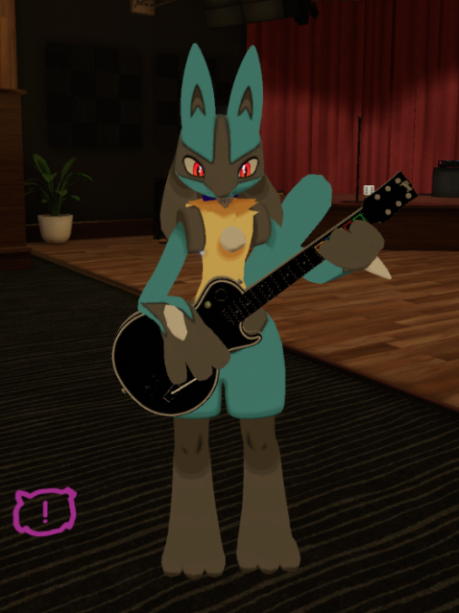
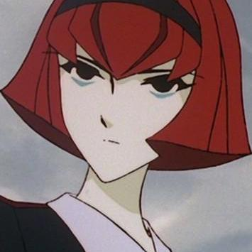

NinjaWFC
Time cannot be found!
Time cannot be found!
The main creator of NinjaWFC is TheNinjaKingOW. He mainly created the website and is also hosting the site of his VPS.
Overland is a very big supporter of this server. He helped out the devleopers mentally and is a very nice moderator.
barronwaffles is the founder of the DWC Emulator, the main code of NinjaWFC.
Atlas
Blu
NYYHarsh
SarahCute
Vega